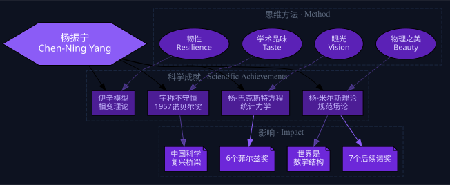

一个从西南联大走出来的中国青年，用一支笔推翻了物理学界奉为圭臬的宇称守恒
他告诉全世界：大自然并不偏爱对称——左手和右手是不平等的
1956年夏天，34岁的杨振宁敲开了吴健雄的实验室。他手里只有一个想法：物理学界已经默认了三百年的宇称守恒——物理定律在镜子里的表现应该和镜子外完全一样——但在弱相互作用中，从来没有人真正验证过。泡利听说吴健雄要做这个实验，嗤之以鼻："以吴的实力应该做更重要的事，犯不着在这种明显荒谬的理论上瞎耽误功夫。"十个月后，吴健雄在接近绝对零度的低温下，用钴-60证明了杨振宁是对的。第二年，诺贝尔奖。
从论文发表到获得诺贝尔奖，只用了12个月——这是诺贝尔奖历史上最快的记录。但对于杨振宁来说，这甚至不是他最重要的成就。他后来的杨-米尔斯规范场论导致了7个后续诺贝尔物理学奖和6个菲尔兹奖——杨-米尔斯方程的证明至今还是千禧年七大数学难题之一。夸克之父盖尔曼对费曼不服不忿，但对杨振宁毕恭毕敬。
杨振宁最常说的两个词是"品味"和"物理之美"。他不认为科学成就靠纯粹智力——靠的是积累效果，而积累需要一个早期的、准确的品味来引导。他在西南联大的老师（吴大猷、王竹溪）帮他建立了这种品味。到了美国后，当导师泰勒给他分配他不喜欢的课题时，他凭品味拒绝——然后用了50年时间，把当初因为"太难"而搁置的三个课题全部做出了诺奖级的成果。
我把他称为"保守的革命者"——在渐进的事情上极其保守（他父亲不让他跳级学数学，他后来也劝别人不要拔苗助长），在根本性问题上则完全不受传统的约束（挑战宇称守恒、82岁娶28岁的翁帆）。理解了这种矛盾统一，你就理解了杨振宁。
点击翻转
1956年前，所有物理学家认为镜子里和镜子外的物理定律完全一样。杨振宁和李政道发现：在弱相互作用中，从来没人验证过这一点。12个月后，诺奖。
点击翻转
1954年和米尔斯共同提出的规范场论，是粒子物理标准模型的理论基石。后续7个诺贝尔物理奖和6个菲尔兹奖建立在这一基础之上。
点击翻转
杨振宁认为成就不是智商比拼——是积累效果。而积累需要一个早期形成的品味来引导。他拒绝过一个15岁天才少年，因为少年回答不出"量子物理中哪个问题最美"。
点击翻转
杨振宁用"美"来判断物理方向。纯数学没有实验的是空中楼阁；纯实验没有理论框架的是标本采集。美的物理：从现象出发→创造数学框架→预言→实验验证。
点击翻转
在统计力学中提出的杨-巴克斯特方程，是杨振宁当初在西南联大就开始思考的问题——50年后终于攻克。这个方程在数学上催生了6个菲尔兹奖。
点击翻转
西南联大的教授们是中国物理学第一代宗师：赵忠尧、吴有训、王竹溪、周培源、吴大猷、陈省身。战争让实验物理不可能——这反而让杨振宁专注于理论，形成了他的品味。
点击翻转
杨振宁和李政道不是在"赌"宇称不守恒。他们的眼光在于：证明宇称在弱相互作用中守不守恒，这件事本身就极有价值。无论结果如何，这个实验都值得做。
点击翻转
物理学定律都用数学框架来表达，而我们承认世界就是这些定律所描述的样子。因此——世界是数学结构的。这不是神秘主义，这是物理学三百年发展的逻辑终点。
品味不是天赋——它是早期教育、导师影响和个人经验的沉淀。杨振宁的品味来自西南联大的教授们和父亲杨武之的数学训练。在你自己的领域里，找到那些让你觉得"美"的问题，而不是那些"热"的问题。美的东西才能支撑你研究五十年。
在渐进的事情上极其保守——不急功近利，不拔苗助长，扎实积累；在根本性问题上不受传统束缚——敢于挑战三百年共识。杨振宁的人生和学术都在这个框架里运行。问自己：这件事是渐进的还是根本性的？然后选择保守或革命。
杨振宁的判断框架：纯数学+无实验=空中楼阁；纯实验+无理论框架=标本采集。好的物理学从真实现象出发，创造数学框架，做出预言，实验验证。这个循环如果在你的领域也能运转，你就找到了正确的方向。
这不是固执，也不是退让——是在极端压力下弯曲而不折断，在其他所有困难下持续坚持。杨振宁的博士课题失败了三个——但他没有放弃其中任何一个。50年后，那三个"失败"全部变成了诺奖级的成果。不是因为他比别人聪明，是因为他比别人有韧性。

不识字的母亲陪着他一起学，一年内学了3000个字。母亲是裹小脚的旧式妇女，但在家道中落时展现出了钢铁般的隐忍——杨振宁的韧性从这里开始。
数学家父亲杨武之看出了儿子的天赋——但拒绝教他微积分。两个暑假，他请来清华历史系的研究生教杨振宁背诵《孟子》。杨振宁今天还能全文背诵。父亲的信条：基础要广，根基要深，不必着急。
日军轰炸昆明，实验物理不可能做。这反而成就了杨振宁——只能做理论。王竹溪教他统计力学，吴大猷教他对称性和群论。品味在这时成形。他的四个博士课题都是在联大时期自己挑的。
泰勒给他分配了一个只能得到近似解的问题。杨振宁拒绝了——他喜欢精确解。这是一个危险的举动，大多数导师会视为冒犯。泰勒不仅接受了，后来还求杨振宁把一篇三页的短文扩展成博士论文。实力说话。
宇称不守恒：论文发表到诺奖只用了12个月。泡利、费曼、朗道全都反对过这个想法。吴健雄取消旅行计划来做实验。诺贝尔奖史上最快。但这不是杨振宁最伟大的成就。
在清华大学，30节课一堂未缺，亲自监考。这是他酝酿了五年的计划，期间经历了夫人病重和自己四次手术。最后一堂课上，他讲了自己和米尔斯1954年的故事。夕阳无限好，何须惆怅近黄昏。
从成果发表到获奖仅12个月。正常周期是13-18年。不是评委会偏袒——是这个成果太重要太响亮了，必须尽快给。
她取消了和丈夫的旅行（庆祝出国二十周年），退掉了船票，用10个月做了极低温钴-60实验。泡利说她会"瞎耽误功夫"——结果她的实验数据差异大到没有任何争议。
杨武之至死没有原谅儿子加入美国国籍（1964年入籍，父亲1973年去世）。杨振宁在94岁转回中国国籍，很大程度上是为了了结这个心结。
杨振宁听过爱因斯坦的讲座，和爱因斯坦有过一次1.5小时的私人交谈。他对这段经历毫无粉饰："我太激动了，根本无法集中注意力。出来后别人问我爱因斯坦说了什么，我真的说不上来。"这种诚实来自极度的自信。
两人合作13年，合写37篇论文，李政道名字在前的有22篇。1962年《纽约客》一篇偏向李政道的文章导致决裂。学术界的共识是：两人都有贡献，但杨振宁是主导者——他的杨-米尔斯理论远超诺奖成就。
杨振宁每次回国，中方会请他列出想见的人的名单。他故意在名单上填了正在"劳改"的科学家的名字。邓稼先和他的整个研究团队因此获释。这在那个年代是救命之恩。
1972年回国时，杨振宁独自反对花1亿美元建加速器——国家太穷，钱应该给计算机和生物。此后四十年间，他不断重复这个立场。当时骂他的人，在改革开放后沉默了。
朗道的物理学家等级：0级=牛顿，0.5级=爱因斯坦，1级=玻尔/海森堡/狄拉克。朗道给自己评2.5级。他在1962年车祸后不能再工作，没来得及评估杨振宁的杨-米尔斯理论。卓克推测：杨振宁在1-2级之间。
2019年杨振宁在国科大演讲时说"高能物理的Party is over"，认为这个领域已经衰落三十年。中科院高能所所长公开反驳他。但杨振宁从1972年就一直在说同样的话。
这是杨振宁的世界观核心结论。物理定律用数学框架表达→世界是定律描述的样子→所以世界是数学结构的。这不是神秘主义——是物理学三百年的逻辑终点。